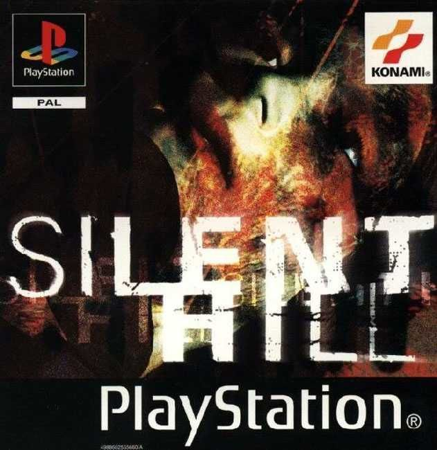
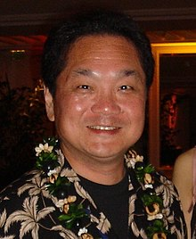

Es una revista online especializada en videojuegos. Un equipo de periodistas y profesionales a los que, por encima de todas las cosas, les gusta disfrutar con los juegos. Un medio donde la opinión de los lectores es lo más importante y además, cuenta de verdad. No por casualidad tenemos la comunidad de habla hispana más grande centrada en videojuegos. Una revista abierta siempre a las ideas nuevas y a todo tipo de jugadores. Una comunidad que se construye en equipo y que gira alrededor del videojuego.
Pepsiman, es un videojuego de acción desarrollado y distribuido por KID para la consola PlayStation de Sony. Fue lanzado exclusivamente en Japón el 4 de marzo del año 1999, y se basa en la mascota del superhéroe epónima de la popular gaseosa estadounidense Pepsi, Pepsiman.
A continuacion te dejamos un slide de juegos muy recomendados de ps1 para pasar un buen rato
Ken Kutaragi , nacido el 2 de agosto de 1950 es el exdirector y director ejecutivo de Sony Computer Entertainment (SCEI), la división de videojuegos de Sony Corporation. Se le conoce como "El Padre de la PlayStation" y sus sucesores y spin-offs, como la PlayStation 2, PocketStation, PlayStation 3, y PlayStation Portable. Ken Kutaragi actualmente es el director ejecutivo de Cellius. Los analistas financieros que controlan las pérdidas y ganancias de Sony Corporation han vigilado mucho a Kutaragi. Eso se atribuye al hecho de que la franquicia PlayStation ha dado muchos beneficios a Sony.
